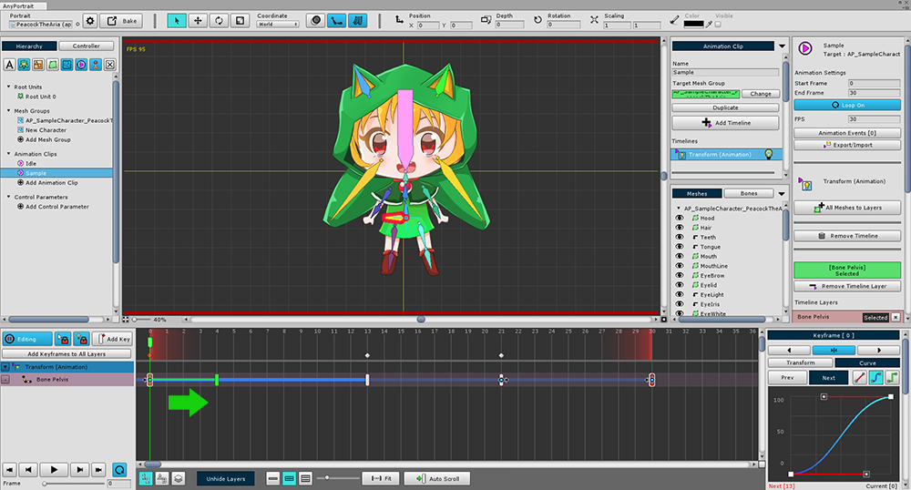

AnyPortrait > Manual > Auto Loop Keyframe
Auto Loop Keyframe
1.0.0
When you create a loop animation, the start and end frames must be the same in most cases.
This is because the boundaries between the beginning and end are ambiguous, resulting in a natural loop animation.
For that reason, when working with many other programs, you need to copy the start frame, paste it into the end frame, and smooth it.
AnyPortrait provides a feature called "Auto Loop Keyframe" to reduce these tasks.

The structure of a typical loop animation.
There are keyframes with the same pose in the start and end frames.
Now try to delete the "Last keyframe" that was duplicated unnecessarily here.

When you delete the last keyframe, keyframes that appear as icons of other features appear in the end frame.
These translucent keyframes are a "Dummy keyframe of the starting keyframe".
For loop animation, the start keyframe is automatically duplicated.
This dummy keyframe is called the "Auto Loop Keyframe".
When this happens, an arrow icon appears in the keyframe, pointing to the keyframe to which it is connected.

When you move the start keyframe, the Auto Loop Keyframe automatically moves.
Loop animation is still possible in this state.
This is because the start keyframe is tied to the actual keyframe on the other side of the loop.
In fact, you can see the animation curves connected to the screen above.

If you navigate to a frame that is ahead of the start keyframe and play it,
it should not be animated in general.
However, you can see that the animation plays because it is virtually looped.

Using Auto Loop Keyframes, it is possible to create a loop animation with empty start and end frames.
This makes the loop boundaries obscure and creates a much more natural motion.